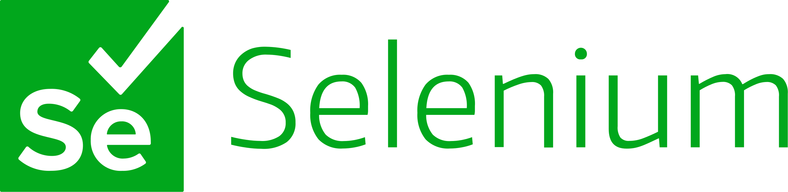
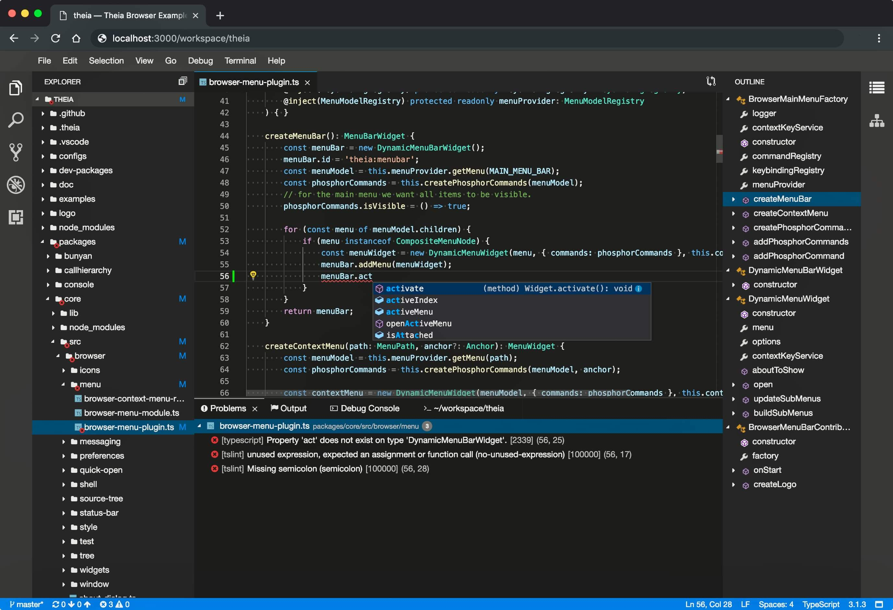

Alumise taseme CASE vahendid on vahendid, mis keskenduvad teostusele, kus mudelitest saab tegelik tarkvaratoode.
Neid kasutatakse andmebaasi struktuuri genereerimiseks, koodi genereerimiseks, testide läbiviimiseks, koodi
versioonihalduseks, konfiguratsioonihalduseks, pöördprojekteerimiseks jms.
Mina olen ise kasutanud Microsoft Visual Studio Code'i
Selenium

 Selenium on tarkvara testimis raamistik
Selenium on tarkvara testimis raamistik 
Eclipse theia on IDE keskkond Allikas